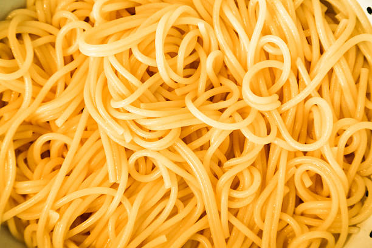

Plain Spaghetti

Tasty Spaghetti
Spaghetti is one of the most simple pasta dishes to make. It is an Italian
dish consisting largely of spaghetti and maybe sauce. The ability to
prepare great spaghetti automatically empowers you to put together so many
other fantastic dishes revolving around spaghetti. The key thing is to get
the spaghetti itself right. 🤞
Ingredients
- 400g spaghetti
- 3 ltrs water
- 1 tsp salt
- 1 tbsp pure vegetable oil
- 1 tbsp margarine
Steps
-
With your spaghetti ready, put the water in a pot and bring to the boil.
-
When you water has boiled, add salt (1 tsp) and oil (2 tbsp). The oil
will help prevent the spaghetti from sticking to each other. Add your
spaghetti and push it in bit-by-bit until it is fully immersed in the
water without having to break the spaghetti. You could break it, but it
takes out the fun of eating spaghetti.
-
Stir your spaghetti and regular intervals until it is cooked. When it is
al-dente pour it into a colander and run it under cold water to stop any
further cooking. Return your spaghetti to the pot.
-
Add your margarine (2 tbsp) and stir to evenly spread it and allow it to
melt. Once done cover the pot to contain the heat.
- That’s it – quick and easy!